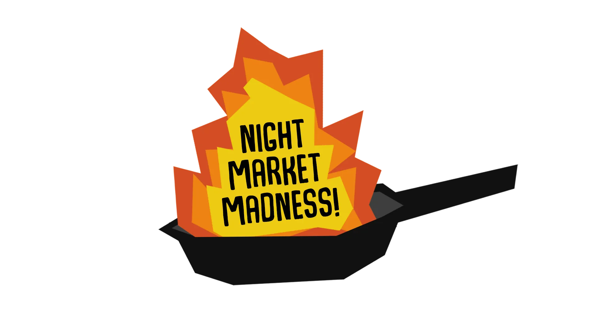
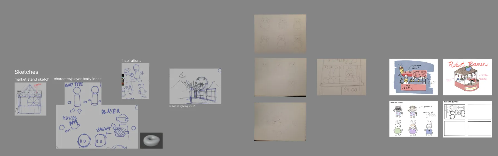
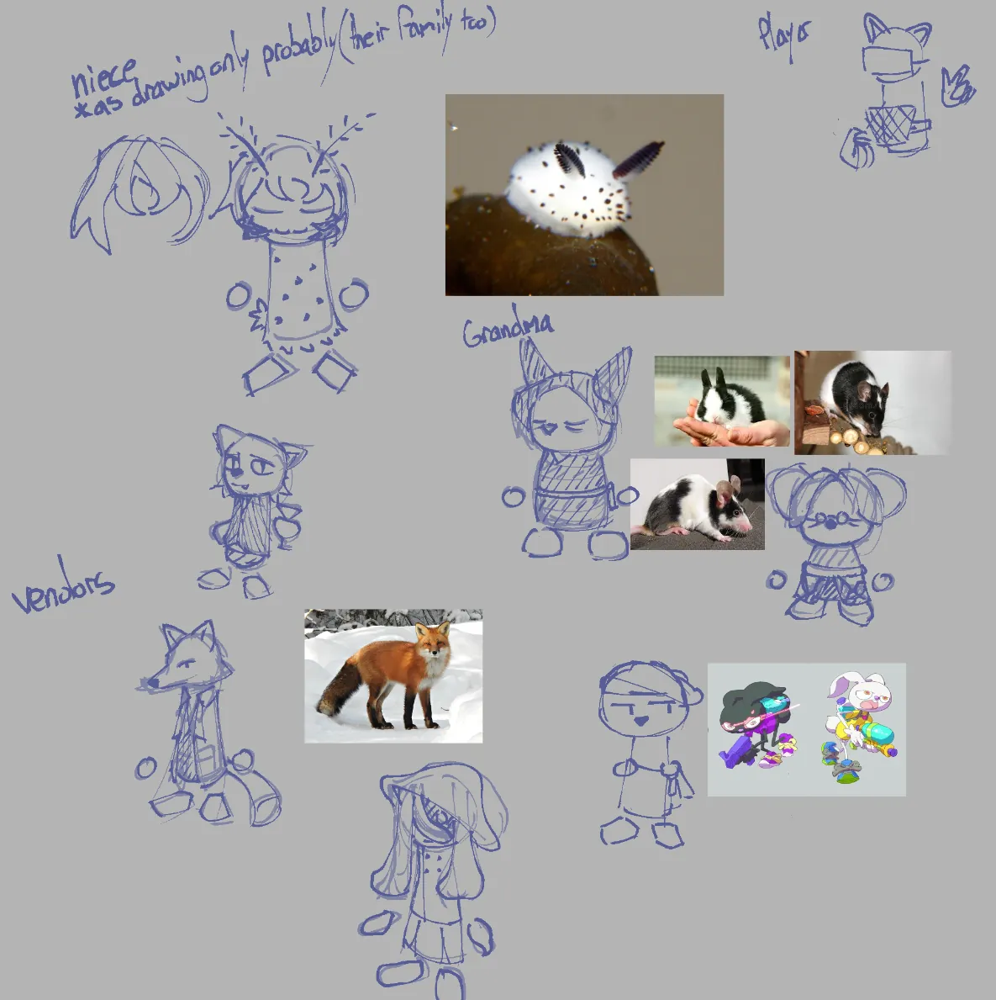
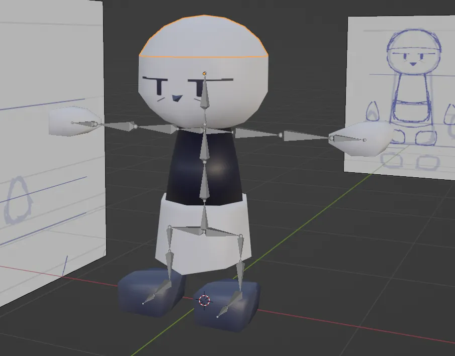

Night Market Madness
ROLES
Modeler, Animator, Composer, Co-Coder
Takeaways
- Implemented roaming NPC systems to enhance environmental immersion and create dynamic player navigation challenges.
- Designed distinct character silhouettes and animations to improve visual readability and communicate player feedback.
- Developed reference sheets and coordinated with team members to streamline the 3D modeling and animation pipeline.
Project Overview
Night Market Madness academic project completed within three months, I worked alongside Kate, Isabelle and Jeremey. Together we decided on the premise of the game, created the designs, models and code for the game within Unity.
Context
Genre: Adventure
Team Size: 4
Platform: PC (Windows Only)
Development Time: September - December 2024 (Three Months)
Tools Used: FL Studio (Music), Blender (Modeling), Unity (Coding & Implementation)

Objective
Night Market Madness was a senior-level VR game, meant to demonstrate our understanding of VR development in Unity. At first, each member of the team pitched an idea for what kind of VR game we could create, and after voting, we decided on the idea where you go around helping vendors in a night market to get ingredients for your Grandma.
We divided our roles, Jeremy would handle the bulk of the programming, Kate and Isabelle would handle the models for the environment and create concept art for the map layout and character concepts, while I would also create concept art for characters, reference sheets for their models, create the models and animate them, as well as compose a track for the game. We would also all collaborate on the design of the game, making sure to communicate our progress and give each other feedback on our work.

Development
With an aesthetic of cute humanoid animals similar to games like Animal Crossing, I began ideating on the designs for Grandma as well as vendors you would encounter in the game. I aimed to make sure each character was visually distinct in terms of both species, and personality. For example, there's a bunny vendor with bags under his eyes, appearing impatient and clearly overworked, while there's a squid with a shadow hovering over their eyes, giving them both a shy and mysterious look. I also made sure to create reference sheets for each character, so that the modeling process would be easier and more efficient, as I would have a clear idea of what I wanted to create before I started modeling.
Using said reference sheet, I would then model, rig and animate the characters in Blender before implementing them in Unity, utilizing Unity's finite state machine to control when each animation would play. I talked with Jeremy beforehand to know what kind of animations I would need to create, and made sure to animate them that their intention was clear for the player, such as nodding when the player succeded or shook their head when the player failed, giving them clear visual feedback on their performance. Their animations can be found in the following google drive: Animations
Lastly, I would compose a track for the game, I originally meant for it to be played whenever a player would begin a mini-game with a vendro, but we felt that it fit the overall vibe of the game, and kept the player alert to the time limit thanks to the songs fast pace.


Coding
To help sell the frantic nature of the game, I was tasked with implementing roaming NPCs that would walk around the map, they were meant to make the market feel more alive, and also to give the player a sense of urgency as they would have to weave through the crowd to get to the vendors before time runs out. I implemented this by using Unity's NavMesh system, which allowed me to easily create a pathfinding system for the NPCs, next, I made sure the NPCs did try to avoid walking into the player and each other, making them feel more natural and less like sliding obstacles.
To help make sure their behavior wasn't predicatble, I made sure to ahve them choose a random stall to visit and look at for a moment, before choosing another random stall to visit. To make sure they walked around the map naturally, I placed checkpoints around the map that the NPC would use as a guide instead of trying to beeline straight for their choosen stall. To complete this, I utilized the finite state machine I set up for the vendors to handle their animations, which included walking around and looking at the stall. There were also plans to allow them to be pushed by the player, so I programmed them to be affected by physics, anytime they detect a collisison, they would become stunned for a moment, halting their pathfinding and movement before they get back up and continue on their way. While it served no purpose, I believe it could be a fun interaction to help immerse the player in the VR experience.
Unfortunately, Jeremy was unable to implement the NPCs in time for the final submission, but I was able to test them in a separate scene, and they worked as intended, giving me confidence that they would have been a great addition to the game.
Conclusion
Overall, I am proud of what we were able to accomplish with Night Market Madness, we were able to create a fun and engaging VR game that showcased our skills in game development. While there were some issues with the game, such as the NPCs not being implemented in time, I believe that we were able to create a solid foundation for the game.